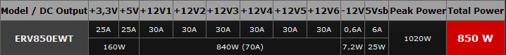
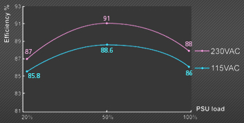
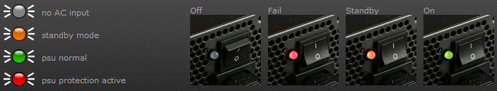
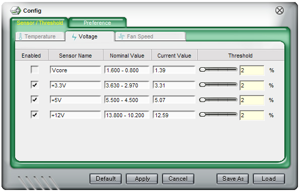

Enermax Revolution 85+ 850W maitinimo bloko apžvalga
Enermax tai kompanija, įkurta 1990 metais Taivanyje, kuri viena pirmųjų perkopė 1kW PSU galios ribą. Enermax specializuojasi maitinimo blokų, korpusų, ventiliatorių bei klaviatūrų gamyboje. Vienas iš šios kompanijos gaminių - Enermax Revolution 85+ 850W maitinimo blokas. Jis yra mažiausios galios Revolution 85+ serijos blokas, kiti Revolution 85+ serijos modeliai dar galingesni - 950W, 1050W ir ir net 1250W. Šis, 850W modelis, nuo kitų, galingesnių serijos modelių skiriasi jungčių skaičiumi, tačiau nenusileidžia efektyvumo rodikliais bei yra sertifikuotas 80 PLUS SILVER.
Žvilgsnis iš arčiau
Enermax Revolution 85+ 850W maitinimo bloko priekinėje pakuotės dalyje matome priklijuotus lipdukus, kurie nurodo maitinimo bloko ypatumus, tokius kaip DXXI ready, SLI Ready, bei apdovanojimus "reddot design award winner 2009" ir "Taiwan Excellence". Galinėje pakuotės dalyje dešimčia užsienio kalbų aprašyti maitinimo bloko ypatumai. Šoninėse pakuotės dalyse nurodyta efektyvumo kreivė, parodytos jungtys ir laidai, nurodytos bloko galios charakteristikos.
Pakuotės viduje randame:
- Enermax Revolution 85+ maitinimo bloką
- Power laidą
- Modular laidus
- CordGuard rėmelį
- dėklą laidams
- 4 tvirtinimo varžtus
- laidų surišimo juosteles
- Manual - vartotojo knygelę
Rinkinyje taipogi buvo free sample - nemokamas, naujasis Apollish UCAP12 ventiliatorius , kurio apžvalgos laukite artimiausiu metu.
Enermax Revolution 85+ 850W maitinimo bloko komplektacija nėra standartinė, ji - kiek geresnė. Komplektacijoje yra CordGuard rėmelis, kuris skirtas maitinimo laido fiksavimui. Laidų dėklas gali praversti tiems, kas dažnai keičia PC komplektaciją - patogu susidėti skirtingus laidus. Specialios PSU laidų sutvarkymo juostelės ne tik pravers išvedžiojant ir slepiant laidus korpuso viduje, bet ir suteiks gerą estetinį vaizdą.
Specifikacijos
- Modelis: ERV850EWT
- Išmatavimai: 190(ilgis) x 150(plotis) x 86(aukštis) mm
- Galia: 850 W
- Efektyvumas: 85%, 80 PLUS® SILVER
- Ypatybės: Fit4future CPU, Fit4future GPU, DXXI ready!, AHD² Topology, 99% 12V Power, Fit4Server, HeatGuard, PowerGuard, SafeGuard, AirGuard, CordGuard, Worldwide compatible
- Ventiliatorius: 135mm, automatiškai valdomi RPM
- Jungtys:
- Laidai:
- Garantija: 5 metų
DXXI ready! - daugelio DX11 vaizdo kortų palaikymas, nes yra 6+2P (8P) PCI-E jungtys.
AHD² Topology - "Asymmetric Hybrid DC-to-DC" skirta gauti aukštą efektyvumą ir stabilų našumą.
99% 12V Power - EPS12V PSU su 99% 12V galingumo palaikymu.
Fit4Server - SSI PSDG 2009 palaikymas Intel Core Extreme/i7, Xeon ir AMD Opteron ir SLI arba CrossFireX ir AMD GAME! ar AMD GAME! Ultra.
HeatGuard - po PSU išjungimo ventiliatorius dar sukasi 30-60s, todėl PSU elementai ataušinami - tai turėtų padidinti jų ilgaamžiškumą.
PowerGuard - PSU gale įrengtas LED indikatorius ( Off / Stand-by / OK / Fail).
SafeGuard - OCP, OVP, AC UVP, DC UVP, OPP, OTP, SCP, SIP apsaugos.
AirGuard - Enermax patentuotas oro paėmimas pro groteles, kurio dėka sumažėja triukšmo lygis.
CordGuard - maitinimo laidas fiksuojamas specialiu rėmeliu, kuris apsaugos nuo netyčinio PSU maitinimo laido ištraukimo.
Worldwide compatible - 100V - 240V AC input automatinis nustatymas bei dažnio parinkimas Power Factor Correction technologijos dėka.

Enermax Revolution 85+ 850W maitinimo blokas turi net šešis +12V 30A kanalus bei 1020W pikinę galią. Suminė bloko galia 850W. Gamintojo nurodomas bloko efektyvumas 87-91% prie 20-100% apkrovos. Enermax pateiktoje kreivėje nurodytas ERV850EWT bloko efektyvumo kitimas priklausomai nuo apkrovos. Esant 50% apkrovai efektyvumas siekia 91% naudojant 230VAC matinimą. Jei sulygintumėm šią kreivę su Cougar S 700 maitinimo bloko kreive - rezultatai beveik nesiskiria.

ERV850EWT bloką paėmus į rankas pirmoji mintis - sunkus. 850W galios maitinimo blokas yra nemažų gabaritų, jo ilgis 190mm: jis 10mm ilgesnis nei Cougar S 700 ir 40mm ilgesnis nei Cooler Master Silent Pro M700. PSU aušina 135mm ventiliatorius, kurio RPM kinta automatiškai, priklausomai nuo PSU apkrovos.
Enermax Revolution 85+ 850W maitinimo bloko rėmas juodai-pilkas, nudažytas stambių dalelių dažais - atrodo ne įprastai ir gražiai. Rėmas standus, storo metalo sluoksnio, todėl nesideformuoja jį nuimant ir surenkant atgal. Rėmelis aplink ventiliatorių nudažytas raudonai, ventiliatoriaus grotelės - juodos, grotelių viduryje pritvirtintas Enermax logotipas. Visi PSU išorėje matomi varžtai - juodi.
Maitinimo bloko šonuose matome Revolution užrašą, bei rodyklių formos įspaudimus korpuse - jie blokui suteikia savimą išvaizdą. Įrenginių maitinimo laidai yra įvilktį į dryžuotą, juodai-geltoną tinklelį. Gaila, tačiau tinklelis kiek per trumpas ir laidai įvilkti ne pilnai. Visi Revolution 85+ 850W maitinimo bloko kištukai juodos ir raudonos spalvos, išimtis - FDD maitinimo laidas, jis turi rudą kištuką bei yra be "sleeving'o". O FDD dar kas nors naudoja?
Naudojami ne atjungiami ir atjungiami, Modular tipo, laidai. Vidinėje PSU dalyje išdėstytos jungtys laidams. Jungtys skirtingų spalvų, jos skirtos skirtingų dydžių kištukams, kurie taipogi skirtingų spalvų. Ne atjungiami laidai ilgi, todėl be vargo pasiekė MB jungtis. Visi laidai lankstesni nei įprasta, todėl tampa lengviau juos paslėpti korpuso viduje.
Galinė ERV850EWT bloko dalis pagaminta iš tinklelio, šone - išdėstytas Power mygtukas, maitinimo laido kištukas bei indikacinis LED. Naudojama PowerGuard technologija, kuri LED indikatoriaus pagalba parodo PSU būseną. Galimi keturi rėžimai: off - išjungtas, Fail - gedimas, Standby - budėjimo rėžimas, On - įjungtas. Man šis sprendimas atrodo tikrai geru, kadangi esant PSU gedimui ar kažkokiam trikdžiui, kuris įtakoja PSU veikimą ir viso PC darbą, matysime raudoną LED šviesą - išsiaiškinti PC gedimus bus paprasčiau.

CordGuard - maitinimo laidas fiksuojamas specialiu rėmeliu, kuris apsaugos nuo netyčinio PSU maitinimo laido ištraukimo. Rėmelis suspaudžiamas ir pritvirtinamas prie PSU galinės sienelės, tuomet užlenkiamas ir užfiksuojamas už maitnimo laido. Šis saugumui skirtas sprendimas aktualus ne visiems, tačiau gali praversti tiems, kieno namuose yra maži vaikai arba po kojomis yra didelė laidų raizgalynė.
Atidarome Enermax Revolution 85+ 850W maitinimo bloko dangtį norėdami pamatyti kas PSU viduje. Sumontuoti nedideli, juodi radiatoriai, kurie aušina K20J60T tranzistorius, PFC diodus bei FQA24N50 PFC tranzistorius. Bloke panaudoti Elite ir Panasonic gamybos kondensatoriai. 3.3V ir 5V linijose panaudoti APW7079 DC to DC ir APM2510N bei APM2510N čipai. ERV850EWT sumontuotas 135mm Silence gamybos ventiliatorius, kurio mentės pagamintos iš permatomo plastiko. PSU turi šias apsaugas: OCP, OVP, AC UVP, DC UVP, OPP, OTP, SCP, SIP. Tai apsaugos nuo įtampų kritimų 12V linijose, trumpo jungimo, per didelio sistemos galios poreikio.
Rezultatai
Testavimo sistema:
- CPU Cooler - Noctua NH-U12P SE2
- Case - Antec Mini P180
- Mainboard - Asus M2N68-AMSE2
- CPU - AMD ATHLON 64 X2 Dual-Core 5000+ AM2 (65W)
- RAM - Corsair DDR2 KIT 2X1G 800MHZ TWIN2X2048-6400 G
- HDD - SEA BARRACUDA 160GB 7200rpm
- PSU - Enermax Revolution 85+ 850W
- Case Fans - Noctua NF-S12B FLX 120mm (1200rpm, 100.6 m³/h, 1.31 mm H2O), Antec 200mm TriCool (400rpm, 39 CFM)
Pateikiu Enermax Revolution 85+ 850W maitinimo bloko įtampų dydžius, užfiksuotus PC Probe II V1.04.74 programa. Stebint šį maitinimo bloką PC Probe II V1.04.74 programa, per valandą nebuvo užfiksuotas nė vienas didesnis nei 2 % įtampos šuolis.

Norėdami pamatyti išsamesnius galios ir efektyvumo testus, galite pažiūrėti jonnyguru.com atliktus Enermax Revolution 85+ 850W testus.
Išvados
Pliusai:
- kokybiškas gaminys
- efektyvus
- inovacijos - Fit4future CPU, Fit4future GPU, DXXI ready, HeatGuard
- Modular laidai
- ilgi ir lankstūs laidai
- gražaus dizaino
- tylus 135mm ventiliatorius
- PowerGuard - PSU gale įrengtas LED indikatorius
- pagerinta komplektacija
Minusai:
- nepilnai į tinklelį įvilkti laidai
- FDD maitinimo laidas?
 Enermax Revolution 85+ 850W maitinimo blokas turėtų susilaukti pasisekimo tų pirkėjų tarpe, kurie gali investuoti į PSU daugiau lėšų bei planuoja jį naudoti ilgiau nei metus ar du - Fit4future CPU, Fit4future GPU, DXXI ready turėtų pasitarnauti ateityje, kuomet bus naudojamos
12P jungtys bei
DX11 grafinės kortos, ERV850EWT kištukai pritaikyti naujiems standartams. Naudingas PSU patobulinimas - gale įrengtas LED indikatorius, kuris parodo PSU veikimo rėžimus ir gali pranešti apie gedimą. Pagerinta maitinimo bloko komplektacija taipogi pliusas, tačiau kritikos verti maitinimo laidai - jie nepilnai įvilkti, ypač sata laidai - jie įvilkti tik iki pirmo kištuko. Taipogi keistu pasirodė sprendimas naudoti FDD maitinimo laidą, kuris negali būti atjungiamas nuo PSU, o be to - nėra įvilktas į tinklelį. ERV850EWT išsiskiria iš kitų maitinimo blokų savo dizainu ir rėmo nudažymo spalva - blokas atrodo solidžiai ir gražiai. Patiko surinkimo kokybė ir komplektacija. Susumavęs visus rezultatus Enermax Revolution 85+ 850W maitinimo blokui skiriu "modding.lt renkasi" įvertinimą.
Enermax Revolution 85+ 850W maitinimo blokas turėtų susilaukti pasisekimo tų pirkėjų tarpe, kurie gali investuoti į PSU daugiau lėšų bei planuoja jį naudoti ilgiau nei metus ar du - Fit4future CPU, Fit4future GPU, DXXI ready turėtų pasitarnauti ateityje, kuomet bus naudojamos
12P jungtys bei
DX11 grafinės kortos, ERV850EWT kištukai pritaikyti naujiems standartams. Naudingas PSU patobulinimas - gale įrengtas LED indikatorius, kuris parodo PSU veikimo rėžimus ir gali pranešti apie gedimą. Pagerinta maitinimo bloko komplektacija taipogi pliusas, tačiau kritikos verti maitinimo laidai - jie nepilnai įvilkti, ypač sata laidai - jie įvilkti tik iki pirmo kištuko. Taipogi keistu pasirodė sprendimas naudoti FDD maitinimo laidą, kuris negali būti atjungiamas nuo PSU, o be to - nėra įvilktas į tinklelį. ERV850EWT išsiskiria iš kitų maitinimo blokų savo dizainu ir rėmo nudažymo spalva - blokas atrodo solidžiai ir gražiai. Patiko surinkimo kokybė ir komplektacija. Susumavęs visus rezultatus Enermax Revolution 85+ 850W maitinimo blokui skiriu "modding.lt renkasi" įvertinimą.
Enermax Revolution 85+ 850W kaina internetinėse parduotuvėse yra apie 670Lt.
Modding.lt komanda dėkoja Alexandra Kogan iš www.enermax.de už apžvalgai suteiktą produktą.
Jei norėsite pakomentuoti mano straipsnį arba pareikšti savo nuomonę, apsilankykite Modding.lt forume.


{kind=link}
{kind=link}
{kind=link}
{kind=link}
{kind=link}
{kind=link}
{kind=link}
{kind=link}
{kind=link}
{kind=link}
{kind=link}
{kind=link}
{kind=link}
{kind=link}
{kind=link}
{kind=link}
{kind=link}
{kind=link}
{kind=link}
{kind=link}
{kind=link}
{kind=link}
{kind=link}